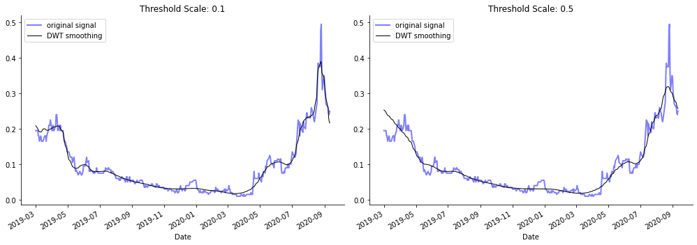

Simple talib¶
!wget https://launchpad.net/~mario-mariomedina/+archive/ubuntu/talib/+files/libta-lib0_0.4.0-oneiric1_amd64.deb -qO libta.deb
!wget https://launchpad.net/~mario-mariomedina/+archive/ubuntu/talib/+files/ta-lib0-dev_0.4.0-oneiric1_amd64.deb -qO ta.deb
!dpkg -i libta.deb ta.deb
!pip install ta-lib
!pip install yfinance
(Reading database ...
(Reading database ... 5%
(Reading database ... 10%
(Reading database ... 15%
(Reading database ... 20%
(Reading database ... 25%
(Reading database ... 30%
(Reading database ... 35%
(Reading database ... 40%
(Reading database ... 45%
(Reading database ... 50%
(Reading database ... 55%
(Reading database ... 60%
(Reading database ... 65%
(Reading database ... 70%
(Reading database ... 75%
(Reading database ... 80%
(Reading database ... 85%
(Reading database ... 90%
(Reading database ... 95%
(Reading database ... 100%
(Reading database ... 144605 files and directories currently installed.)
Preparing to unpack libta.deb ...
Unpacking libta-lib0 (0.4.0-oneiric1) over (0.4.0-oneiric1) ...
Preparing to unpack ta.deb ...
Unpacking ta-lib0-dev (0.4.0-oneiric1) over (0.4.0-oneiric1) ...
Setting up libta-lib0 (0.4.0-oneiric1) ...
Setting up ta-lib0-dev (0.4.0-oneiric1) ...
Processing triggers for man-db (2.8.3-2ubuntu0.1) ...
Processing triggers for libc-bin (2.27-3ubuntu1) ...
/sbin/ldconfig.real: /usr/local/lib/python3.6/dist-packages/ideep4py/lib/libmkldnn.so.0 is not a symbolic link
Requirement already satisfied: ta-lib in /usr/local/lib/python3.6/dist-packages (0.4.18)
Requirement already satisfied: numpy in /usr/local/lib/python3.6/dist-packages (from ta-lib) (1.18.5)
Requirement already satisfied: yfinance in /usr/local/lib/python3.6/dist-packages (0.1.54)
Requirement already satisfied: numpy>=1.15 in /usr/local/lib/python3.6/dist-packages (from yfinance) (1.18.5)
Requirement already satisfied: requests>=2.20 in /usr/local/lib/python3.6/dist-packages (from yfinance) (2.23.0)
Requirement already satisfied: pandas>=0.24 in /usr/local/lib/python3.6/dist-packages (from yfinance) (1.0.5)
Requirement already satisfied: multitasking>=0.0.7 in /usr/local/lib/python3.6/dist-packages (from yfinance) (0.0.9)
Requirement already satisfied: urllib3!=1.25.0,!=1.25.1,<1.26,>=1.21.1 in /usr/local/lib/python3.6/dist-packages (from requests>=2.20->yfinance) (1.24.3)
Requirement already satisfied: certifi>=2017.4.17 in /usr/local/lib/python3.6/dist-packages (from requests>=2.20->yfinance) (2020.6.20)
Requirement already satisfied: chardet<4,>=3.0.2 in /usr/local/lib/python3.6/dist-packages (from requests>=2.20->yfinance) (3.0.4)
Requirement already satisfied: idna<3,>=2.5 in /usr/local/lib/python3.6/dist-packages (from requests>=2.20->yfinance) (2.10)
Requirement already satisfied: python-dateutil>=2.6.1 in /usr/local/lib/python3.6/dist-packages (from pandas>=0.24->yfinance) (2.8.1)
Requirement already satisfied: pytz>=2017.2 in /usr/local/lib/python3.6/dist-packages (from pandas>=0.24->yfinance) (2018.9)
Requirement already satisfied: six>=1.5 in /usr/local/lib/python3.6/dist-packages (from python-dateutil>=2.6.1->pandas>=0.24->yfinance) (1.15.0)
import yfinance as yf
from talib import RSI, BBANDS
import matplotlib.pyplot as plt
msft = yf.Ticker('NTAR.CN')
msft_data = msft.history(period="max")
up, mid, low = BBANDS(msft_data.Close, timeperiod=21, nbdevup=2, nbdevdn=2, matype=0)
rsi = RSI(msft_data.Close, timeperiod=14)
data = pd.DataFrame({'NTAR': msft_data.Close, 'BB Up': up, 'BB Mid': mid,
'BB down': low, 'RSI': rsi})
fg, axes= plt.subplots(nrows=2, figsize=(15,8))
data.drop('RSI', axis=1).plot(ax=axes[0], lw=1, title='Bollinger Bands')
data['RSI'].plot(ax=axes[1], lw=1, title='Relative Strength Index')
axes[1].axhline(70, lw=1, ls='--', c='k')
axes[1].axhline(30, lw=1, ls='--', c='k')
<matplotlib.lines.Line2D at 0x7f5f98c43eb8>

One of my best sales was selling NTAR at 3.00 back in november
import yfinance as yf
from talib import RSI, BBANDS
import matplotlib.pyplot as plt
ntar = yf.Ticker('NTAR.CN')
ntar_data = ntar.history(start='2019-08-01', end='2019-12-30')
up, mid, low = BBANDS(ntar_data.Close, timeperiod=7, nbdevup=2, nbdevdn=2, matype=0)
rsi = RSI(ntar_data.Close, timeperiod=14)
data = pd.DataFrame({'NTAR': ntar_data.Close, 'BB Up': up, 'BB Mid': mid,
'BB down': low, 'RSI': rsi})
fg, axes= plt.subplots(nrows=2, figsize=(15,8))
data.drop('RSI', axis=1).plot(ax=axes[0], lw=1, title='Bollinger Bands')
data['RSI'].plot(ax=axes[1], lw=1, title='Relative Strength Index')
axes[1].axhline(70, lw=1, ls='--', c='k')
axes[1].axhline(30, lw=1, ls='--', c='k')
<matplotlib.lines.Line2D at 0x7f5f98889518>

!pip install PyWavelets
Requirement already satisfied: PyWavelets in /usr/local/lib/python3.6/dist-packages (1.1.1)
Requirement already satisfied: numpy>=1.13.3 in /usr/local/lib/python3.6/dist-packages (from PyWavelets) (1.18.5)
import pywt
ntar = yf.Ticker('IDK.CN')
data = ntar.history(start='2019-03-01', end='2020-09-12')
signal = data.Close
wavelet = "db6"
fig, axes = plt.subplots(ncols=2, figsize=(14, 5))
for i, scale in enumerate([.1, .5]):
coefficients = pywt.wavedec(signal, wavelet, mode='per')
coefficients[1:] = [pywt.threshold(i, value=scale*signal.max(), mode='soft') for i in coefficients[1:]]
reconstructed_signal = pywt.waverec(coefficients, wavelet, mode='per')
signal.plot(color="b", alpha=0.5, label='original signal', lw=2,
title=f'Threshold Scale: {scale:.1f}', ax=axes[i])
if len(reconstructed_signal) != len(signal.index):
reconstructed_signal=reconstructed_signal[:len(signal.index)]
pd.Series(reconstructed_signal, index=signal.index).plot(c='k', label='DWT smoothing', linewidth=1, ax=axes[i])
axes[i].legend()
fig.tight_layout()
sns.despine();
